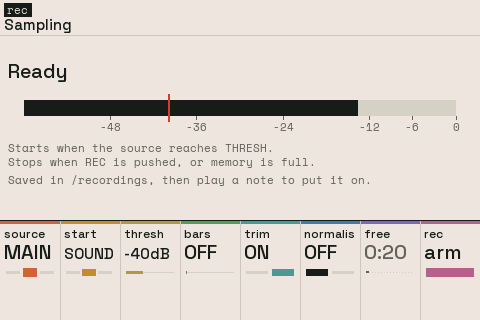

Chapter 7
Sampling
7.1 SAMPLING
Shift + BROWSE.

Records what the instrument plays, the main out or one mixer channel, into a new sample. The bar shows the source's level from -60dB to full scale; with START on SOUND a line marks THRESH. What's recorded goes through the same limiter as the main out, without the metronome.
When the take ends it is trimmed and normalised if those are on, saved as /recordings/REC001.wav (then REC002 and so on), and the screen closes asking for a note: the next note played gets a new slot named after the file, as USE SAMPLE does. Any button instead leaves the file on the card unused.
A take is held in free sample memory as it records, so FREE is how long it can run. The settings can't change while a take is armed or recording. A channel records what it sends to the main out: after its level, pan, mute and solo, without the send effects. Loading a project or starting a new one throws a take away. Line in and mic come with the next hardware.
| Knob | Setting | Turn | Push |
|---|---|---|---|
| 1 | SOURCE | MAIN, or a mixer channel CH 1 to CH 8 | |
| 2 | START | NOW: when REC is pushed. SOUND: when the source reaches THRESH. PLAY: at the pattern's top, from PLAY or the next time round | |
| 3 | THRESH | The level SOUND starts at, -60 to -6dB | |
| 4 | BARS | OFF, or stop after that many bars at the tempo | |
| 5 | TRIM | Cuts the silence (under -60dB) off both ends | Flips it |
| 6 | NORMALISE | Raises the take until its peak is at -0.1dB | Flips it |
| 7 | FREE | How long a take sample memory has room for | |
| 8 | REC | Shows the time recorded | ARM; then STOP, which keeps the take. Shift: DISCARD throws it away |
Knobs not listed do nothing here. Shift + push puts most settings back to how a new one has them.